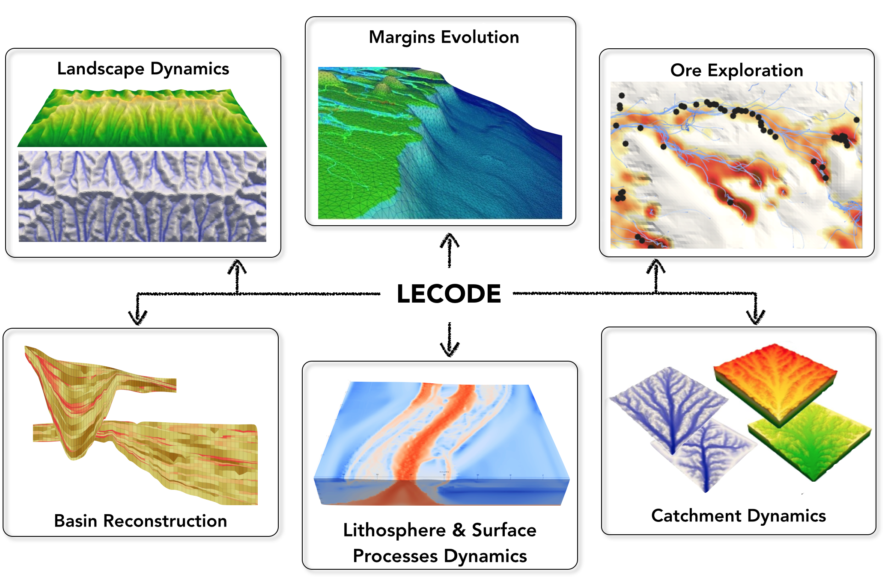

Stratigraphic & Geomorphic Forward Modelling Framework
Sediment Transport @ Geological Scales.
Welcome to the SGFM framework
CSIRO has been investing over the past 3 years in a unified, predictive science of surface
processes and stratigraphy through the development of a Stratigraphic & Geomorphic Forward Modelling Framework
(SGFM).

LECODE model
The main enhancements in
- a fully parallelised approach, which increases the computational power and could take fully advantage of High Performance Computing (HPC) infrastructures;
- a new formulation for open-channel transport and mass-wasting representation, ensuring conservation of mass and momentum and allowing simultaneous erosion, transport and deposition.
- a hybrid approach inspired by the simplified Marker-and-Cell theory and the Path-Sampling method to simulate flow dynamics on a triangulated irregular network (TIN).
- an innovative remeshing strategy of the TIN based on depressionless and flow accumulation algorithms, which allows for variable spatial resolution and ensure the stability of open-channel flow hydrodynamics solution.
- the representation of a virtually unlimited number of user-defined sediment classes.

Accessing the capability
The website and the associated github repository is hosting some documentation related to LECODE and the
SGFM framework and not the source codes!
The codes are available under a non-commercial license agreement for our main partners and we intend to
provide an open source package in the future... In the meantime, feel free to drop us a line at
SGFM support team to discuss possible collaborations and
specific arrangements.
Support or Contact
Having troubles with the code? Check out the documentation in the child pages as well as the wiki or contact the SGFM support team and we’ll help you sort it out.